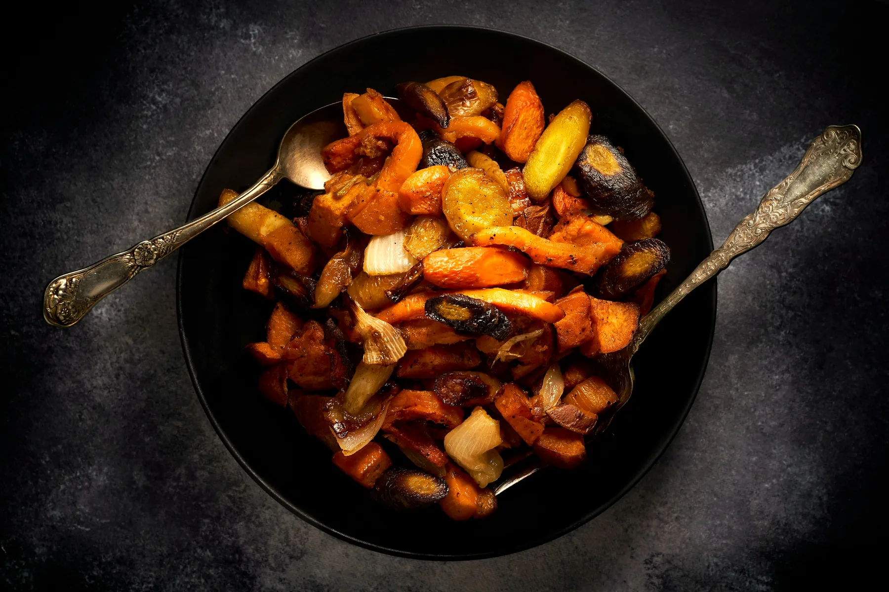

Slate & Saffron
The world's vegetarian kitchen

Food from six continents.
Written like a friend would.
Open the book01 · From the kitchen
The Menu
Paneer Butter MasalaMulayam paneer, tamatar aur makkhan ki reshmi gravy mein.35 minVegetable Pad ThaiThailand ke khatte-meethe, moongfali wale rice noodles.25 minKoshariChawal, dal aur pasta, upar teekha tamatar aur karara pyaaz.50 minRatatouilleGarmiyon ki sabziyon ki rangeen French dish.60 minChickpea TacosMasaledar chane aur nimbu ke saath naram tortilla.25 minGulab JamunGulab ki chashni mein doobe naram khoye ke gole.45 min
See all 40 recipes →


02 · Our story
One kitchen, six continents.
We collect vegetarian dishes from around the world and write them simply, with a desi swap for anything hard to find at home.
Check what's in your fridge →03 · Explore
Six continents

05 · Tonight